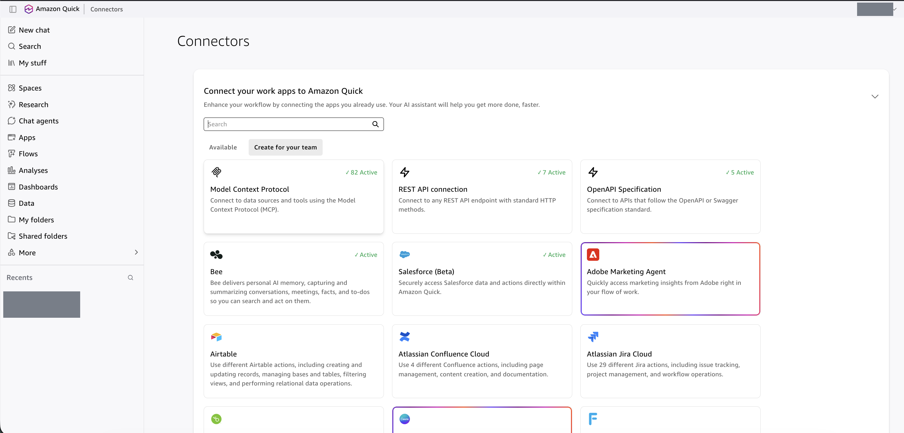
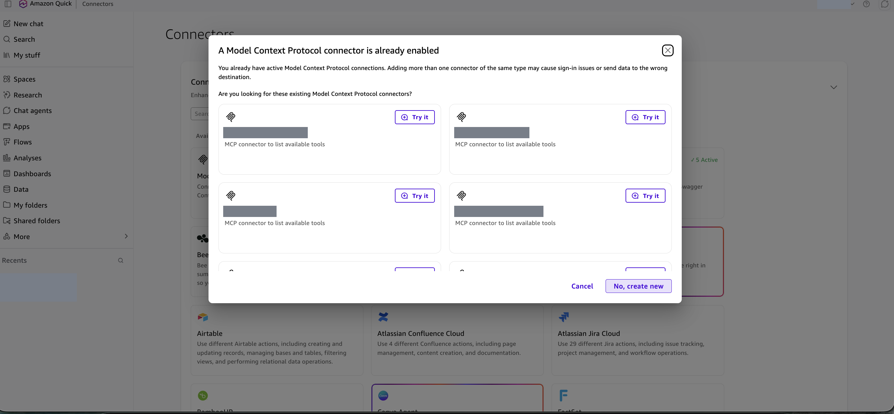
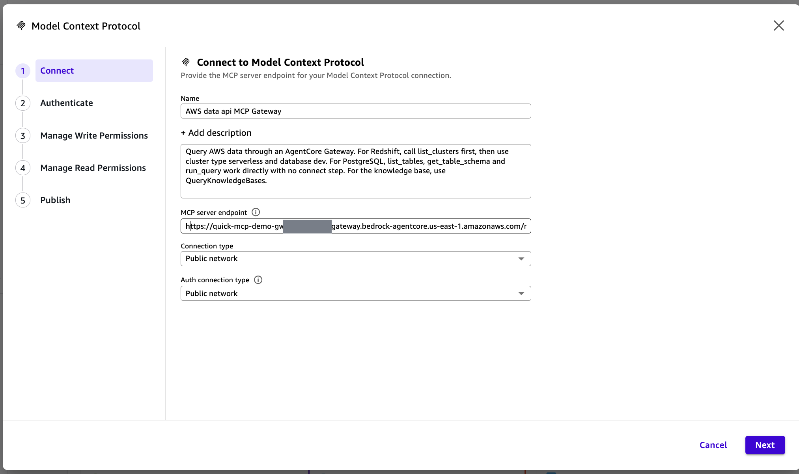
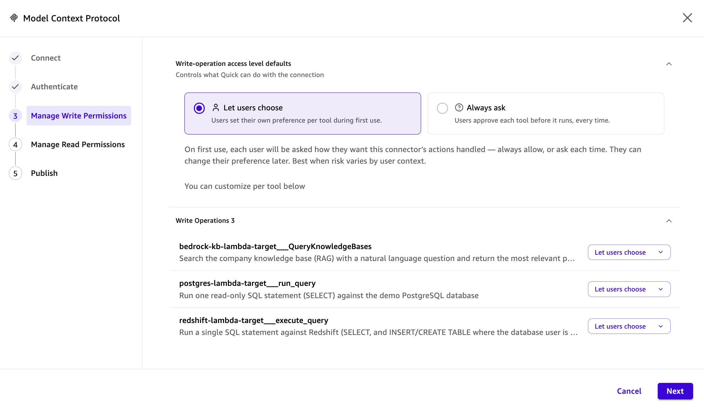
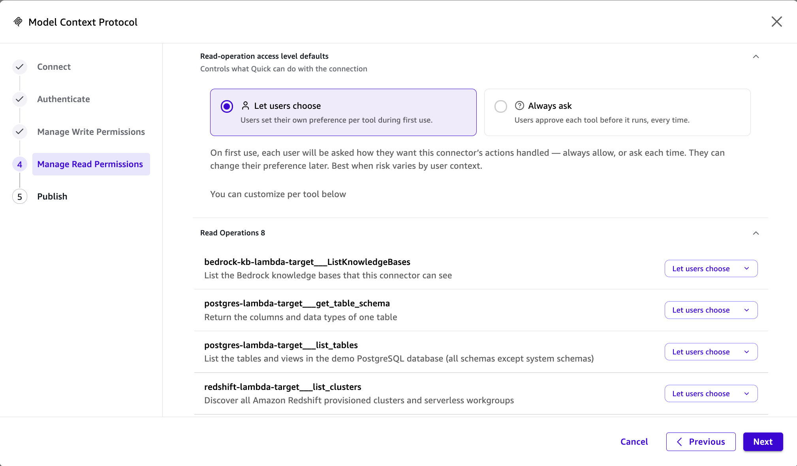
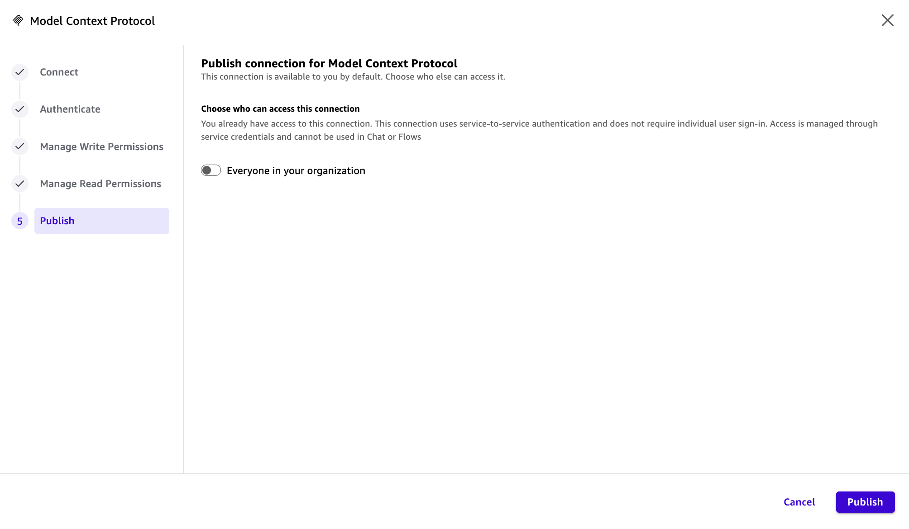
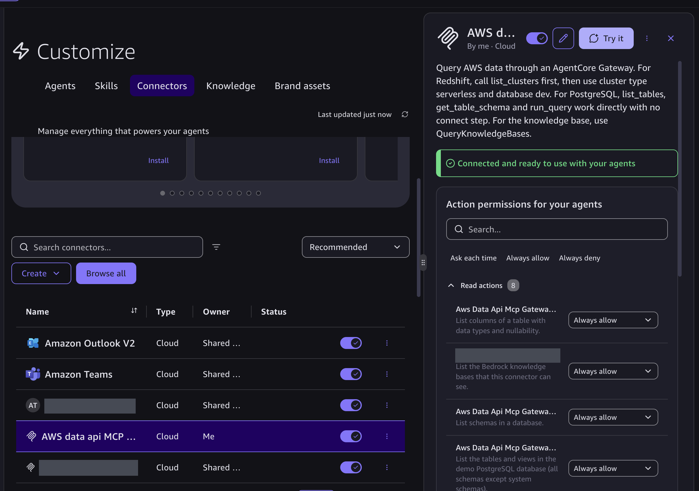

企业最佳实践：Cloud MCP
用 Cognito + AgentCore Gateway 提供统一的、带鉴权的云端 MCP 入口，Lambda 里运行 MCP server。Quick 建一个云端连接器、自动换令牌即可使用。凭证和权限集中管理、可审计、可扩展。
为什么企业选它
免本地部署
MCP server 在云端 Lambda 运行，用户无需本地装 uv/uvx、Python 或 awslabs server，也不用维护本机 AWS 凭证和到数据库的直连。
安全 + 可审计
统一经 Cognito OAuth 令牌和 Gateway JWT 校验，凭证集中在 Secrets Manager 与 IAM，不下发终端；每个 Lambda 最小权限，调用经 CloudTrail/CloudWatch 留痕。
后台无感迭代
新增数据源只在同一 Gateway 加目标、更新 Lambda，客户端不改配置，Sync 即可见到新工具。天然支持多客户端、多团队。
链路
管理员已按模块 2 阶段 4 搭好 Gateway 与 Cognito（tools/list 返回 11 个工具）。为了完成本 module，需要您准备以下由管理员交付的 4 个值，用于下面在 Quick 里创建云端 MCP 连接器（业务用户无需开终端）：
- Gateway URL（以
/mcp结尾），用于连接器的 MCP server URL 字段 - Client ID，用于 Authenticate 步骤
- Token URL，用于 Authenticate 步骤
- Client secret，用于 Authenticate 步骤；相当于密码，请谨慎保存，勿与第三方分享
并已登录 Quick（Enterprise 订阅、具备创建连接器权限）。
在连接器创建并发布成功后，您预期看到：
- Quick 里一个云端 MCP 连接器（服务间 OAuth），Desktop 显示状态 Connected and ready to use with your agents（格式类似步骤 5 的截图）
- 11 个工具按 Write(3) / Read(8) 分好权限并发布
- 在 Desktop 用 Agent 查询 Redshift / RDS / 知识库，令牌自动续期，无需手动更新
Client secret 是整个 Gateway 的钥匙，请谨慎保存，勿与第三方分享；怀疑泄露即在 Cognito 轮换。
准备管理员交付的值与连接器字段
下面这些值由管理员在模块 2 搭建时产生并交付（管理员那边的取值方式见模块 2 / AGENTS.md）。业务用户把它们填进连接器即可，这一步不需要在本机跑任何命令。
| 值 | 样子 | 说明 |
|---|---|---|
| Gateway URL | https://<gateway-id>.gateway.bedrock-agentcore.us-east-1.amazonaws.com/mcp | 以 /mcp 结尾 |
| Client ID | 1a2b3c4d5e6f7g8h9i0j... | app client 编号，不算秘密 |
| Token URL | https://quick-mcp-demo-xxxxxx.auth.us-east-1.amazoncognito.com/oauth2/token | Cognito 域名前缀 + 区域拼成 |
| Client secret | •••••••••••••••• | 相当于密码；管理员通过剪贴板/密码管理器交付，勿明文传 |
连接器字段对照
| 字段 | 填什么 | 来源 |
|---|---|---|
| Name | AWS MCP Gateway | 自定 |
| Description | 英文短句（只用字母、数字、空格和 _ . , ! ? -），如 Query AWS data through an AgentCore Gateway. | 自定 |
| MCP server URL | Gateway 地址，以 /mcp 结尾 | AgentCore Gateway |
| Authentication | Service-to-service OAuth | — |
| Client ID | app client 编号（不算秘密） | Cognito |
| Client secret | app client 密钥（相当于密码，勿贴聊天/文档） | Secrets Manager |
| Token URL | https://<域名前缀>.auth.<区域>.amazoncognito.com/oauth2/token | Cognito |
| VPC connection | Public network（资源服务器与认证服务器都是公网端点） | — |
在 Quick 里创建连接器



/mcp 结尾）。Connection type 与 Auth connection type 都选 Public network。下一步 Authenticate 选服务间 OAuth，填 Client ID、Client secret、Token URL。工具权限与发布

QueryKnowledgeBases、PostgreSQL run_query、Redshift execute_query。能执行 SQL 的工具，企业环境建议选 Always ask（每次运行前批准）。

在 Desktop 里使用

⚠️ 实践要点
- Quick 把工具列表当静态的。Gateway 新增目标后，要在连接器里重新 Sync，新工具才出现。
- Write/Read 分类按工具名判断，不代表数据库真能写；真正写权限由数据库用户决定。调用前 Quick 会弹确认。
- Client secret 是整个 Gateway 的钥匙，可调用所有目标。不要贴到聊天或文档；怀疑泄露就在 Cognito 轮换。
验收（在 Quick 里提问）
| 问题 | 期望 |
|---|---|
| Redshift 里 demo_sales 有多少行、总收入多少 | 2600 行，1197156.76 |
| 按产品类别统计收入，并显示 SQL | Subscription 620058.00、Devices 374181.22、Smart Home 202917.54 |
| 数据库（RDS）里有哪些表 | demo_products、demo_sales，数字与 Redshift 一致 |
| 知识库里查：退货期限多少天，给出处 | 30 天，出处 return-policy.md |
| 让 Agent 删除 demo_sales 的数据 | 被拒绝（Redshift 默认只读，RDS 用只读角色） |
🎉 Workshop 完成
至此，业务用户可在 Quick 里用自然语言查询 Redshift、RDS 和 Bedrock 知识库，所有访问都经过统一鉴权与审计，破坏性操作被数据库权限兜底拒绝。记得按模块 2 的清理步骤回收计费资源，并在 Quick 里手动删除连接器。